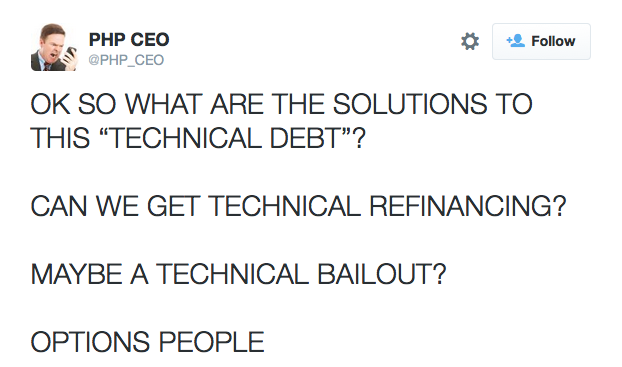
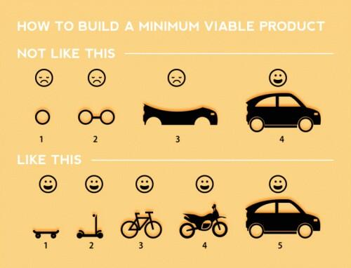
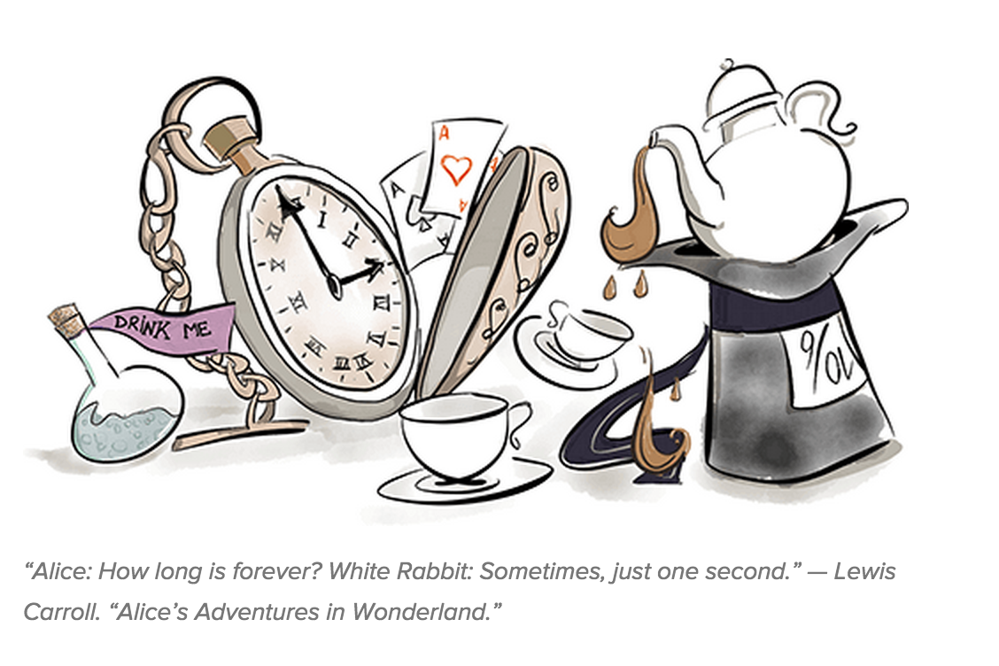
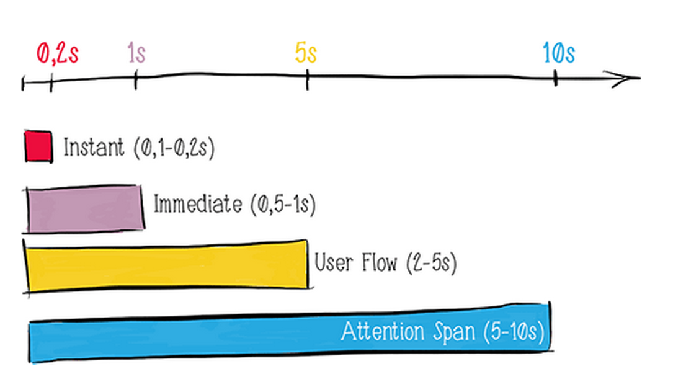
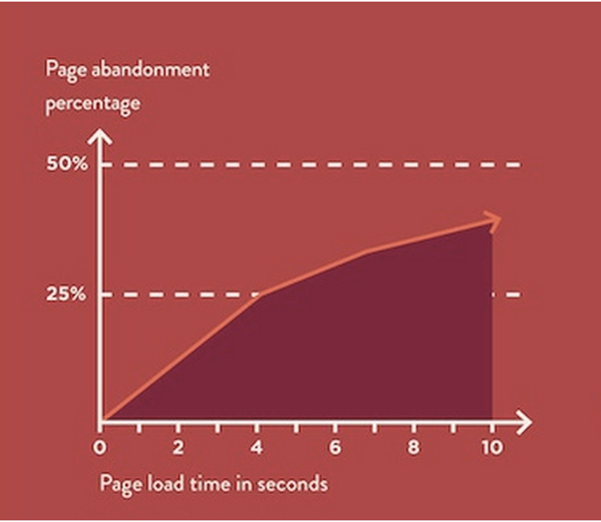
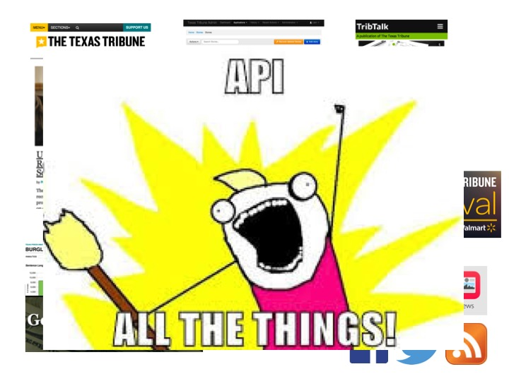
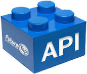
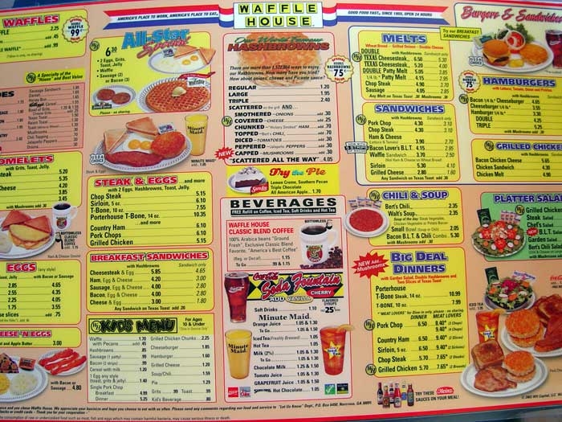

Meet The Tech Team!
Why Do They Always Say 'Tech Debt'?
Maybe This is a Better Metaphor

Or This

It's A System Thing

How Did We Get Here?
How Do We Improve Things?
Minimum Viable Product
The Agile Manifesto
- Individuals and interactions over processes and tools
- Working software over comprehensive documentation
- Customer collaboration over contract negotiation
- Responding to change over following a plan
Principles of Agile Development

Agile Ceremonies
- planning
- review
- demo
- retrospective
"The Site Is Slow!"
What is Web Performance?
A perception of time
How Fast it Feels Like a Website Loads
Why Do We Care About Performance?
What Determines a Website's Performance?
Need to Understand a Little About How a Webpage Loads
This is Simplified But...
(1) The browser locates a website based on its URL.
(2) The browser asks the server for HTML, CSS, JavaScript, and images needed to make that website look good and be usable.
(3) Server sends the requested files to the browser.
Enter the Performance Budget
How Do We Measure Performance Budget?
(1) Size of files needed
(2) Number of times the browser has to ask the server for files (each takes time)
(3) Time it takes for people to start seeing a page
What's Next?
Our site
Site+CMS
Site+CMS+Dataapps
Site+CMS+Dataapps+TribTalk+Ads+Events
Site+CMS+Dataapps+TribTalk+Ads+Events+Social+Apps
Site+CMS+Dataapps+TribTalk+Ads+Events+Social+Apps+DevicesOHDEARGOD
Solution!
What is an API?
- It's blue.
- It's got arrows, plugs, gears, legos.
- Lots of clouds.
What does it do?
- It's a way for computers to browse a site, kind of like a person does.
- It's an easily-accessible layer on top of a database.
- It connects applications.
What is it good for?
- It tells developers what's available.
- It abstracts away the nitty-gritty details.
- It separates data from its presentation.
Tribune API Goals
- Improve content search and recommendation.
- Improve handling and grouping of images and multimedia.
- Publish beyond the sites' borders (platforms, social media, media partners).
- Get TT, TribTalk, and data apps talking to each other.